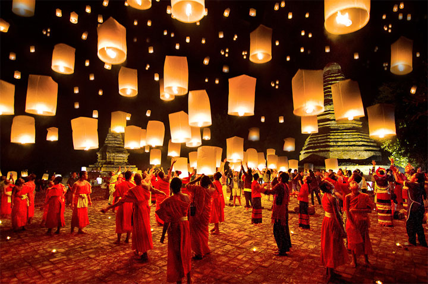
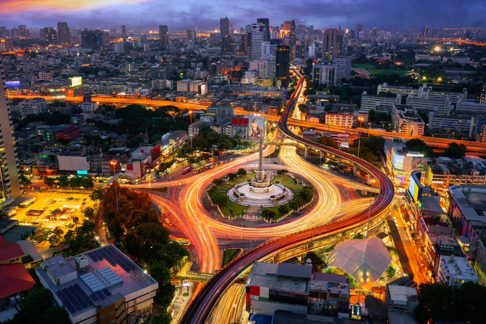
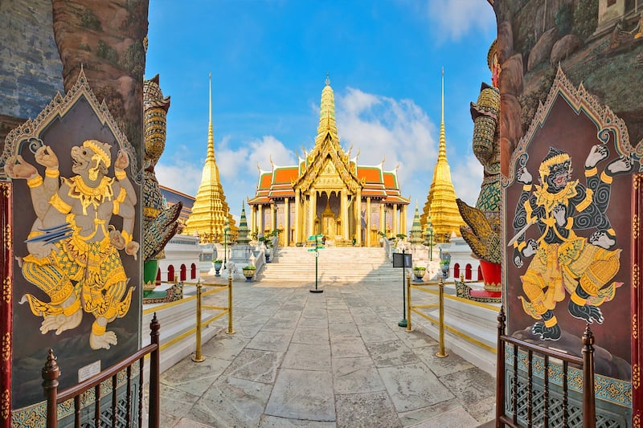
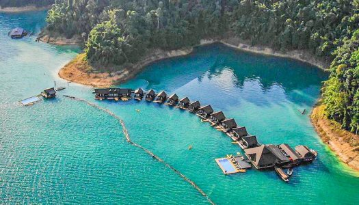
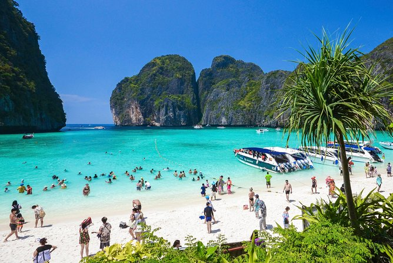
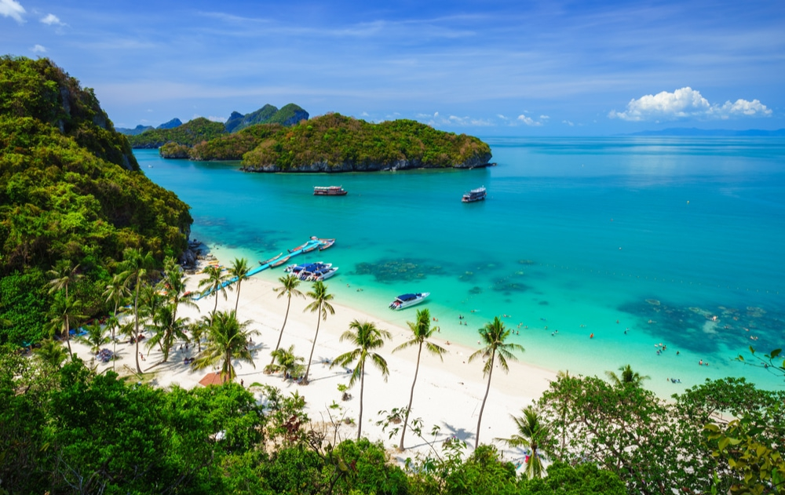

Thailand, country located in the centre of mainland Southeast Asia. Located wholly within the tropics, Thailand encompasses diverse ecosystems, including the hilly forested areas of the northern frontier, the fertile rice fields of the central plains, the broad plateau of the northeast, and the rugged coasts along the narrow southern peninsula. - Britannica
The culture of Thailand is a unique blend of various influences that have evolved over time. Local customs, animist beliefs, Buddhist traditions, and regional ethnic and cultural practices have all played a role in shaping Thai culture.
Thailand has made impressive economic and social progress over several decades. However, the COVID-19 crisis has interrupted this progress. Thanks to its sound macroeconomic policy framework, Thailand was well placed to respond rapidly to the sharp economic downturn. Nevertheless, achieving high-income country status will require, in addition to a strong recovery programme, a set of policy reforms focused on productivity growth and human capital accumulation.
There is lots of places to visit in Thailand. Most popular are -
For major tourist attractions in Bangkok, most of them are Historical sites or religious sites such as temples in Bangkok. There is beautiful architecture, wall painting and also important in History, such as Wat Phra Sri Rattanasamaram (Phra Kaew), Wat Phra Chetuphon Wimon Mangalaram (wat pho), wat arun Ratchawararam, Wat Sra Ket, and Phra Bor Banphot (Golden mountain), Wat Ratchanadda, Wat Traimit, Wat Benchamabophit, Wat Bowonniwet Vihara Suthasan, Wat Thep Wararam etc.
With beautiful nature blended with Lanna Culture and colours of contemporary perfectly Chiang Mai is, therefore, a province that has many tourists, both Thai and foreigners, come in many millions each year. Popular tourist activities in Chiang Mai include worshipping the Phra That doi suthep, which is an important Landmark of Chiang Mai people. Experience the Local way of life and shop for stylish handmade products at Thapae Walking Street.

Tropical beaches, hidden temples, local markets, and a thumping club scene. Phuket draws those who mellow in the sun and thrive at night. Further inland, Phuket Town’s eateries allow you to dip into chili and blue ginger-spiced dishes, and a stroll through the old quarter opens a window into the layers of its past. Despite its size and geography, there’s plenty of dining, accommodations, and adventure to satisfy luxury travellers and budget-conscious trip takers all year long.
The Phi Phi islands are an archipelago of 6 islands, with the 2 main islands being Phi Phi Don and Phi Phi Leh. Just a 45-minute speedboat trip or a 90-minute ferryboat ride from either Phuket or Krabi, these picture postcard islands are excellent tropical getaways in Southeast Asia. Phi Phi has pristine beaches, stunning rock formations, and vivid turquoise waters teeming with colourful marine life. The larger and inhabited Phi Phi Don attracts hundreds of travellers to its lovely shores, while the smaller uninhabited Phi Phi Leh has beautiful bays and beaches, including the iconic Maya Bay.
Koh Samui (Samui Island) is a popular resort island in the Gulf of Thailand with stunning beaches and plenty of fun activities. This cosmopolitan beach destination attracts a wide range of visitors, from budget travellers staying in simple beachside bungalows to the wealthiest holidaymakers enjoying the luxury of one of the many 5-star resorts and villas on Koh Samui. There are 3 main beach towns on Samui island, each offering different experiences. From the hustle and bustle of Chaweng Beach to the lively yet relaxed atmosphere of Lamai Beach and the timeless feel of Bophut's Fisherman's Village, Koh Samui is unique among Thailand's islands in maintaining a broad appeal for many types of visitors.
